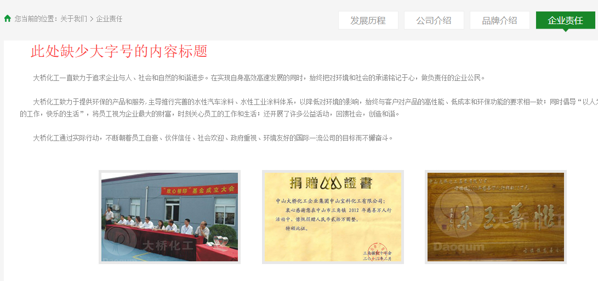

一、前台
| 序号 | 页面 | 视口版本 | 问题截图 | 问题描述 | 改进方案 | 优先级 | 备注（改进说明） |
|---|---|---|---|---|---|---|---|
| 所有页面 | 所有版本 | 网站根域名 daoqum.com.cn 没有重定向到主域名 www.daoqum.com.cn | 网站根域名 daoqum.com.cn 301重定向到主域名 www.daoqum.com.cn | 中 | |||
| 所有页面 | PC | 网页上很多地方的中文字体都是宋体，建议改为微软雅黑，更为美观 | 将页面默认字体及各页面中文字体均改为微软雅黑 | 低 | |||
| 所有页面 | 所有版本 | 顶部导航logo和“首页”链接错误，应链接至"/"，而不是目前的"/index/index.html" | 顶部导航logo和“首页”菜单项链接至"/" | 中 | |||
| 所有页面 | 所有版本 | 底部备案号链接错误 | 底部备案号链接至备案系统首页 | 低 | |||
| 首页 | PC | 首页banner在浏览器窗口高度比较小时宽度会变小 | 在浏览器窗口高度比较小时，banner的宽度应保持全屏 | 低 | |||
| http://www.daoqum.com.cn/products/index.html | PC | "金树"品牌区域鼠标划过小图标后其他图标排列错乱 | 鼠标划过小图标后所有图标应排列整齐 | 高 | |||
| 所有页面 | 所有版本 | 页面上有一些静态资源死链接，如：http://www.daoqum.com.cn/Public/home/js/jquery-1.8.0.min.js 等 | 去除死链接 | 低 | |||
| 首页 | 移动版 | 移动设备下首页视频播放效果有改进空间 | 移动设备下首页视频播放时背景颜色建议更深，以更突出视频。另移动设备下的播放界面建议和PC下一致，视频未播放时在视频中间显示大的圆形播放按钮。 | 低 | |||
| 所有页面 | 所有版本 | 网页内容文字大多为12px偏小，且跟其他标题性文字差别较大 | 建议默认字号增大为14px，更易阅读 | 低 | |||
| http://www.daoqum.com.cn/about/brand.html | 所有版本 | “大桥旗下品牌矩阵”区域的3张图片没有对齐 | 此处的3张图片在水平方向应对齐 | 中 | |||
|
http://www.daoqum.com.cn/about/resp.html http://www.daoqum.com.cn/about/organ.html |
所有版本 |  | “企业责任”和“组织架构”这两个页面缺少内容标题 | 建议跟“发展历程”等相邻栏目一样加上字号较大的内容标题 | 中 | ||
|
1、 http://www.daoqum.com.cn/about/resp.html http://www.daoqum.com.cn/about/organ.html 及其他所有相邻栏目页面 2、 http://www.daoqum.com.cn/advantage/technology.html http://www.daoqum.com.cn/advantage/quali.html 及其他所有相邻栏目页面 |
移动版 |
1、手机下分类导航是用左右滑动的方式来切换，略有不便，且当页面是“企业责任”和“组织架构”时这两个小标题无法完全显示或不显示。 2、手机和pad竖屏下不显示面包屑导航。 |
1、手机下分类导航建议全部显示出来。 2、手机和pad竖屏下显示面包屑导航。 |
低 | |||
| http://www.daoqum.com.cn/advantage/achievement.html | PC | “参与制定行业、地方标准”此处的3张图片并无链接或特殊效果，鼠标划过后却显示手型 | 去除鼠标手型 | 低 | |||
| http://www.daoqum.com.cn/products/info.html?id=41&type=1&classid=12等所有产品栏目子页面 | 所有版本 | 此处的3个导航直接链接到产品栏目首页 | 此处的3个导航链接应加上相应的锚链，如"/products/index.html#39" | 中 | |||
|
http://daoqum.com.cn/career/career/id/53.html http://daoqum.com.cn/career/career/id/55.html |
所有版本 | 死链接（404错误页面）:面包屑导航中“人力资源”链接错误 | 修复 | 高 |
{kind=link}
{kind=link}
{kind=link}
{kind=link}
{kind=link}
{kind=link}
{kind=link}
{kind=link}
{kind=link}
{kind=link}
{kind=link}
{kind=link}
{kind=link}
{kind=link}
{kind=link}
{kind=link}